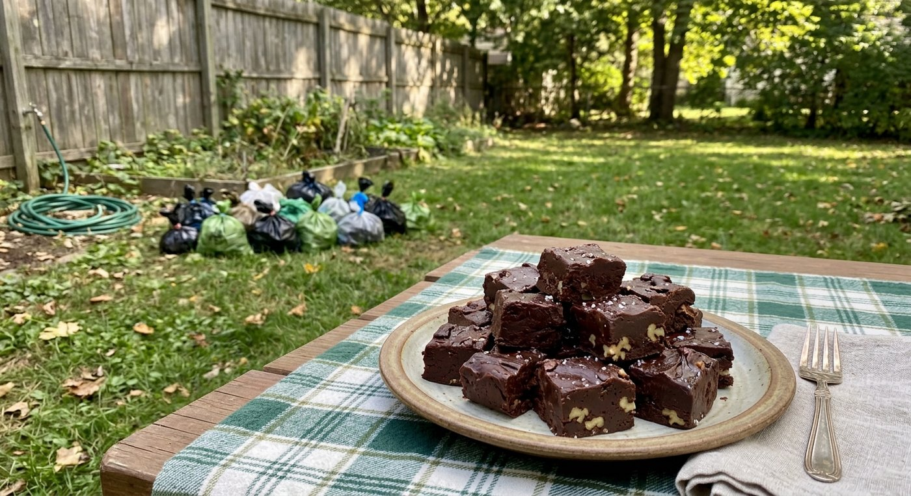
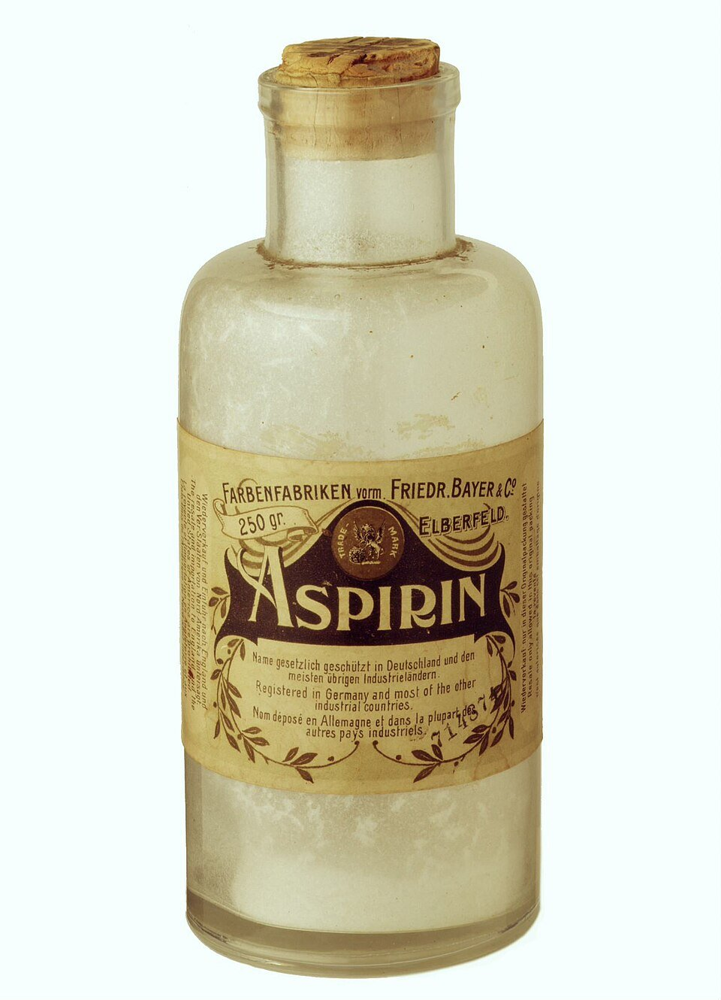
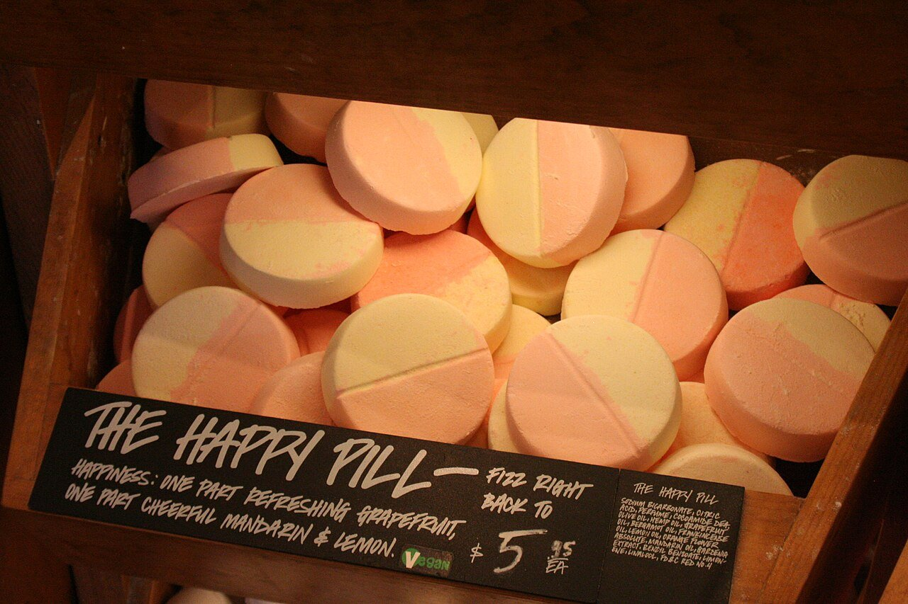
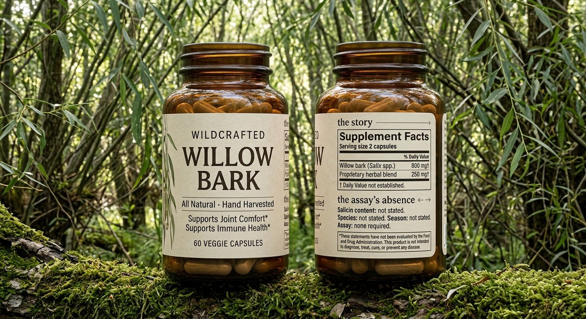
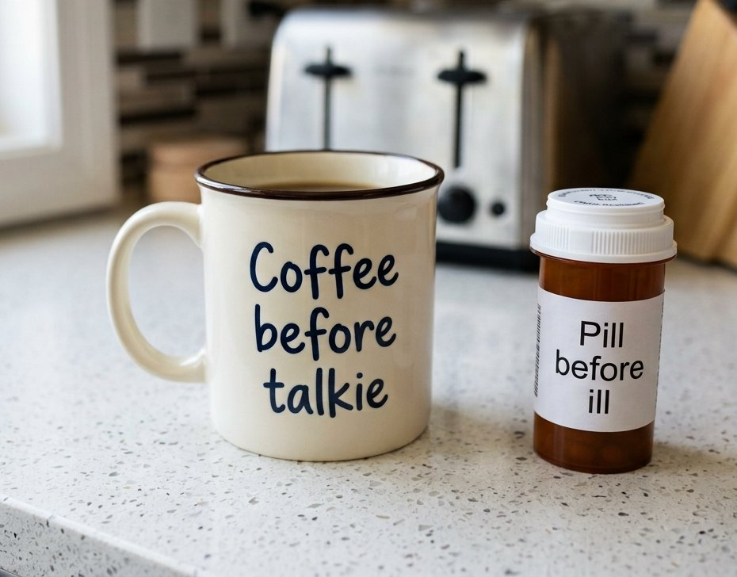

Noble Medicine
Eric Silver · August 19, 2026
Disgust is how our emotions keep us from poisoning ourselves — and the arguments people make against medication have disgust exactly backwards.
That the rules of disgust are irrational is not news; Rozin and his students have been saying so for forty years, and no one is shocked to learn that a fudge shaped like feces tastes worse.1 Yet such disgust is culturally informed, and it costs in both directions. Lax regulation of naturopathic “healing” sends some 23,000 Americans a year to an emergency room on account of a supplement, and admits about 2,000 of them;2 the attendant tendency to reject “unnatural” drugs is harder to count, but medication not taken as prescribed is credited, in a much-repeated estimate, with on the order of 125,000 American deaths a year,3 and the evidence below says a large share of that is belief rather than circumstance.

The sense of drugs being unnatural or “disgusting” does not accrue to the pill, but the condition that we associate it with. Ironically, this means that the more “shameful” the condition, the less likely people are to engage in persistent treatment of it. In Becky Briesacher’s claims study of seven conditions, adherence ran from 72 percent for hypertension down to 37 percent for gout, and the order does not follow the drugs, which are mild at both ends.4 Gout is not a clean case, since its pill prevents attacks rather than treating them and necessity fades between flares; but it is also the disease of port and gluttony, the one condition on the list a patient is expected to have earned, and the allopurinol is not reached for with pride.
And just as a placebo may cure, these beliefs generate their own clinically reported side-effects: when the SAMSON trial gave people who had quit statins, in rotation, the statin, a placebo, and nothing, nine-tenths of the symptom burden they reported on the drug appeared on the placebo too.5 Across 94 studies of long-term medication, the best predictor of stopping was not what the drug did but what the patient believed about drugs in general: concerns about dependence and long-term harm halved the odds of adherence.6 The belief that a pill is a crutch is the bluntest form of this. Polled before the Defeat Depression campaign in 1991, 78 percent of the British public thought antidepressants were addictive,7 and four in ten patients who start one today stop within the month.8 In addiction medicine, this belief kills. A survey of AA members found about one in six thought members should not take relapse-prevention drugs and nearly a third had been pressed by other members to stop taking some medication.9 For opioids, this drug avoidance is fatal. In a study of forty thousand people with opioid use disorder, buprenorphine or methadone cut overdoses by more than half over a year, and the abstinence-based pathways, detox, residential, intensive outpatient, are a risk factor — not a treatment — as changing tolerances lead to fatal overdose.10
When Rozin asked people why they prefer natural things, the preference weakened but survived being told that the natural and the synthetic version were chemically identical. It was, in his word, ideational, a judgment about what a thing is and where it came from, not what it does. It is also, he found, weaker for medicines than for foods: people who would never eat a synthetic tomato will swallow a synthetic pill.11
What keeps the rest from swallowing it is the lack of a good story. A medicine gets called unnatural when no one has given it a narrative the disgust system can use, and the system, handed nothing, supplies “unknown,” which it reads as “contaminated.” It is worth seeing how little it takes. Willow bark chewed off the tree is natural. Boiled in a clay pot over a wood fire it is natural, though boiling is already extraction, a chemistry. Boiled in a steel pot on a gas range it is still natural; nobody refuses tea because it came out of a kettle. Dried, ground, and pressed into a tablet at the kitchen by familiar hands is fine. The identical tablet from a factory is unnatural. What fails on the last step is that the contact history can no longer be told: whose hands, which room, what fire. Cleanliness makes it worse. A sterile room is a contact history with nobody in it, and to a system built on contagion, “no one I know touched this” reads as “someone I don’t know did.”12 The pill needs a grandmother.
We need a better story — and here’s one that’s true: the pill is the cleaner version of the medicine we already take. Every drug in the cabinet that matters began as a plant someone chewed: willow for pain, foxglove for the failing heart, poppy for agony, cinchona for fever, and each became a drug in a bottle by the same route, someone isolating the active molecule, measuring it, and throwing away the rest. In 1897 Felix Hoffmann acetylated salicylic acid in a Bayer laboratory, and from 1899 the company sold it as Aspirin. The miracle was not the molecule, which is willow’s active principle with one alteration to spare the stomach. It was that you knew what you were taking: the same compound at the same dose in every tablet, made to a standard and assayed against it, and, seventy years on, tested. John Vane worked out in 1971 how it works and won a Nobel for it.13 In 1988 the ISIS-2 trial gave aspirin to some seventeen thousand people in the hours after a heart attack and found it cut their odds of dying in the next five weeks by nearly a quarter, from a tablet costing a fraction of a cent.14 Its harms are real, it thins the blood and can bleed the gut and must not be given to feverish children, and every one of them is printed on the box with a number attached, because someone measured.


It’s hard to want to see Bayer as a hero; the same firm put heroin on the market the following year as a cough remedy and kept it there for a decade.15 The miracle was the assay: contents known, dose fixed, promise checked against people who did not get it. And it is harder still to speak in defense of marketing, which is the position the rest of this essay is about to take. But consider how useful it would be if Bayer were a hero, because a hero is a contact history. Disgust keys on who touched the thing; a trusted maker is a pair of hands the system can picture, and for a while the company knew it, selling “genuine Bayer Aspirin” against the imitators as if the name were the grandmother. We have no such figure now for the pill in general. The maker is a shell company in a low-tax jurisdiction, the brand is a made-up word, and the one institution that actually vouches for the contents, the trial, has no face at all.
Stigma of this kind has been reversed before, and never by argument. Pasteurized milk was resisted for two decades as dead milk, cooked milk, milk with the life heated out of it; physicians worried it destroyed the nutrients and the raw-milk “certification” movement offered the natural alternative, until cities began requiring pasteurization, Chicago first in 1908, New York in 1914, and infant mortality fell where they did.16 The indoor toilet was worse. Bringing the privy inside the house struck the nineteenth century as both indecent and dangerous, and the fear of sewer gas seeping up the pipes was respectable medical opinion for a generation; what changed it was not a better theory but utility and status, the water closet arriving first in the good houses, then in the building codes, until its absence and not its presence was the mark of the slum.17 Disgust yielded to convenience and to what the neighbors had. That is the pattern to expect for the pill: it will be destigmatized, if it is, by being useful and ordinary in the right houses, not by anyone winning the argument about willow bark.

There’s something we can learn from herbal supplements.
Herbal supplements may feel like a warm hug, but intellectually they’re disgusting. Herbal products in the United States are sold under a 1994 law that exempts them from proving either safety or efficacy before sale; the FDA acts only after harm.18 When Steven Newmaster’s group DNA-barcoded 44 herbal products from twelve companies, three-fifths contained plant species not on the label, a third were bulked with rice, soybean, or wheat, and only two of the twelve companies passed clean.19 One in five Ayurvedic remedies bought in Boston-area shops contained lead, mercury, or arsenic.20 Weight-loss and “male enhancement” botanicals are spiked with unlabeled prescription drugs often enough that the FDA keeps a running list.21 The herbs that are exactly what they claim to be have their own record: ephedra, tied in adverse-event reports to more than a hundred deaths before the 2004 ban;22 birthwort, which put a hundred Belgian dieters into kidney failure and later gave many of them cancers of the urinary tract.23 And willow bark itself carries salicin in amounts that vary by species, by season, and by how it was dried, which is why the Reverend Edward Stone, writing to the Royal Society in 1763 about curing agues with a dram of the powder, was, like every herbalist before and since, guessing at the dose.24
Marketing understood all of this long before the psychologists wrote it down, and we have arranged the rules of marketing so that the understanding works against the one product with a proven benefit. The history is short and runs the wrong way. The patent-medicine era was a wild west of advertised cures, and the 1906 Pure Food and Drugs Act and its 1912 amendment were written against exactly that: false therapeutic claims on the label. The “ethical” drug houses answered by forswearing advertisement to the public altogether and marketing only to physicians, and for most of the twentieth century a prescription drug was, by the industry’s own code, a thing that could not be advertised. In 1962, after thalidomide, Congress gave the FDA authority over prescription-drug advertising, and the rules that followed required every claim of benefit to carry a fair balance of risk.25 Then in 1994 the supplement industry, in one of the most effective lobbying campaigns of the decade, wrote itself out of the regime: the Dietary Supplement Health and Education Act let a product be sold without proof of safety or efficacy, and permitted it to claim to “support” any function of the body so long as it did not name a disease and printed the disclaimer.18 The upshot is that in every rich country but two, a company that can show in a randomized trial that its prescription pill keeps people alive is forbidden to tell the public so; in the two that allow it, the United States and New Zealand, the advertisement must recite the label, which is to say it must read the assay aloud, and a list of what was measured lands on the disgust system as a list of contaminants.26 Beer, coffee, and “supplements,” all of them drugs and none of them required to prove anything, may say nearly what they like, and what they choose to say is provenance: the farmer’s hands on the bag of coffee, the mountain spring and the friends around the fire on the beer, the leaf on the bottle. Coffee is the clearest case, a superbly marketed class of stimulants and the one dependence people boast of, in print, on the mug. Nobody prints “pill before you’re ill” on a mug, and the reason why is the whole of this essay. The supplement maker may print “supports immune health,” with an asterisk, on a product that need not contain the plant on its label; the drug maker may not print “prevents heart attacks” on one that has been shown to. We have it exactly backwards. The product that must prove itself is the one we have muzzled, and the product that need not is the one we have licensed to be charming.
And the craft works in both directions. Lush prints the face and first name of the person who made the bath bomb on the label, supplying the grandmother at the cost of a sticker; “small-batch” and “hand-made” do the same work in two words. The opposite is for sale as well: the skincare aisle sells “clinical,” “dermatologist-tested,” and the sterile white tube as luxury, which is the pill’s story, told well, on behalf of a product that does less. Nor is disgust, once blunted, any bar to price. Beanless coffee, assembled in a laboratory to taste like the bean, sells above ordinary coffee; synthetic is not a discount once it has a story.

The same story covers the drugs people find hardest to take, the ones for mood, and there the missing narrative is not about the pill’s provenance but about our own. The objection is that a mood ought to be one’s own, that chemistry has lately and artificially intruded on a creature whose feelings were, until recently, unmedicated. It is a rule we have been able to afford only lately; Rozin also documented how preferences moralize as subsistence risk recedes,27 and a rule against altering one’s own mind is a luxury available to an animal that no longer fears the mouthful. Noble, in the old sense, meant unmixed; it is still the word chemistry uses for the metals that will not tarnish and the gases that will not react, and the noble savage is a purity fantasy of the same family as the wildcrafted jar: a self that nothing foreign has touched. No such creature ever existed. We are an animal that self-medicates, and has been for longer than we have been human. About ten million years ago a single amino-acid substitution in one enzyme, ADH4, gave the common ancestor of humans, chimpanzees, and gorillas roughly a fortyfold jump in the ability to metabolize ethanol; we were built to handle drink long before we were built to brew it, because fallen fruit ferments and the smell of alcohol was the smell of calories on the forest floor.28 Robert Dudley calls that ancestor the drunken monkey.29 The monkey is us, and once it learned to ferment on purpose the dose was never small. A sailor in the age of sail was entitled by regulation to a gallon of beer a day, and when the beer spoiled on a long passage, to half a pint of rum, cut with water after Admiral Vernon’s order of 1740 and served twice daily as grog, a ration the Royal Navy did not abolish until 1970; half an imperial pint of navy rum is eight or nine of today’s standard drinks, every day, at sea, on watch.30 Ashore was much the same: medieval laborers and monks drew allowances of about a gallon of ale a day,31 and by W. J. Rorabaugh’s accounting the average American adult in 1830 drank some seven gallons of pure alcohol a year, three times today’s rate.32 Discount hard for weak beer and for water that could kill you, and the exposure is still daily, lifelong, and begun in childhood with small beer at the family table. For most of the human career we were, gently and continuously, drunk.
There are benefits to finding oneself occasionally in one’s cups. A social ape can be too watchful, too self-conscious, too governed by the fear of another’s judgment to close the small distance between two people at the fire, or the dinner party. Give it a reliable, temporary way to lower its own guard and a great many meetings become possible that nerve alone would have prevented, and a great many of us are here, if we are honest, because our parents were briefly braver than sober judgment would have licensed. That is reproductive consequence, and reproductive consequence is what evolution works on. It runs the other way too: an animal with an off-switch at dusk can afford a more anxious, more attentive daytime baseline than one stuck with its vigilance around the clock, so the drug may have widened the band of temperaments a social species could hold at all.
There is a stranger way to tell the same story, which I find I like. Yeast makes a molecule that reaches straight into the primate reward system; the primate, thus captured, spent ten thousand years cultivating, selecting, breeding, and carrying that yeast to every habitable corner of the planet, until the fungus that makes ethanol is among the most successful organisms alive. Some archaeologists think it was the wish to brew, not the wish to bake, that first bent us to the labor of farming grain: beer before bread.33 Richard Dawkins would call the ethanol an extended phenotype, the way a flower’s nectar is a bribe that conscripts a bee into unpaid courier work.34 We are, in part, yeast’s bees. Each has been writing the other’s evolutionary story for as long as there has been a story to write, which is a long way from a creature whose moods were its own until the pharmacist arrived.
In my job researching mechanisms to improve Medicaid, I’m usually trying to figure out how to attach people to medication, to encourage their continuation, and to reduce the barriers to reconnection. Rozin’s contagion rule says that once a thing has touched something impure it stays impure, that a moment of contact is permanent, and that the rule runs one way: the drop of sewage spoils the barrel of wine, and no quantity of wine redeems the sewage.35 By this logic, a recovery must be “clean” to count, earned by abstinence and touched by nothing else, and so the two treatments with the best evidence are the two that feel most like cheating. Buprenorphine and methadone roughly halve the death rate of people with an opioid use disorder,36 and the objection to them is, almost word for word, that they are not natural: that this is trading one addiction for another. Nationally only about one person in four with the disorder receives either one.37 Contingency management, which pays people modest sums for drug-free tests, is the best-supported treatment that exists for stimulant addiction,38 and it is resisted harder still, because money touching virtue spoils the virtue; for years federal guidance capped what a patient could receive at about seventy-five dollars, in a country that will pay a hospital many thousands for the overdose. Both objections are disgust doing its job on the wrong object. A recovery held together by a measured dose or a weekly payment is not a contaminated recovery. It is, like the tablet, the version with the unknowns removed.
Which is why the pill for a frightened mind, or a craving one, deserves the same narrative as the pill for a headache. Alcohol arrived as a bundle: the disinhibition we came for, fused to the liver damage, the fights, the hangover, the dependence, the harm to a fetus, the slow subtraction of everything else; take the whole thing or none of it. And marketing made the bundle cool: the beer around the fire, the cocktail in the film, the whisky beside the leather chair. We should let it do the same for the version that leaves the harms out. Let James Bond take a beta-blocker before the baccarat; his hands would be steadier, and he would still be Bond. Let Lara Croft carry sertraline in the pack beside the pistols. And when Top Gun is made again, put on the screen what the real ones take: dextroamphetamine to stay up and temazepam to come down, issued by the flight surgeon and known in Air Force slang as go pills and no-go pills.40 A beta-blocker before the talk, an SSRI over the season, keeps the effect and files off most of the rest, and what it fails to file off is written on the label with a frequency beside it. That is the same edit that turned bark into aspirin, applied to the oldest anxiolytic there is. The person who sets the bottle down because it isn’t natural, or because they would rather not take something that changes how they feel, is doing something ancient and honorable with the wrong object. Their disgust is on duty, guarding the body against adulterated, unmeasured, unknown stuff, and guarding a mood they believe is their own. It has only lost track of which container that is, and forgotten that no mood was ever entirely our own. Given the story, it would flinch at the wildcrafted jar and the third glass, and reach without a second thought for the noble form: what is left when everything else has been taken away.
This essay was written with the help of an AI (Anthropic’s Claude, in Claude Code), which drafted, checked sources, and built the page. The bottle, the willow bark, the fudge, and the mug are AI-generated images (Google Gemini) — very much so. The two photographs are credited where they appear.
Sources
- P. Rozin, L. Millman & C. Nemeroff, “Operation of the Laws of Sympathetic Magic in Disgust and Other Domains,” Journal of Personality and Social Psychology 50 (1986). The cockroach-in-juice and fudge-shaped-like-feces experiments: subjects rejected both while agreeing they were harmless. source ↗ ↩
- A. I. Geller et al., “Emergency Department Visits for Adverse Events Related to Dietary Supplements,” New England Journal of Medicine 373 (2015). Surveillance estimate of 23,005 ED visits and 2,154 hospitalizations a year, mostly weight-loss and energy products in the young and swallowing problems in the old. source ↗ ↩
- L. Osterberg & T. Blaschke, “Adherence to Medication,” New England Journal of Medicine 353 (2005), repeating the estimate of roughly 125,000 deaths a year from R. McCarthy, “The Price You Pay for the Drug Not Taken,” Business and Health 16 (1998). It is an estimate, not a count. source ↗ ↩
- B. A. Briesacher et al., “Comparison of Drug Adherence Rates among Patients with Seven Different Medical Conditions,” Pharmacotherapy 28 (2008). One-year adherence (80 percent of days covered): hypertension 72, hypothyroidism 68, diabetes 65, seizure disorder 61, hyperlipidemia 55, osteoporosis 51, gout 37 percent. source ↗ ↩
- F. A. Wood et al., “N-of-1 Trial of a Statin, Placebo, or No Treatment to Assess Side Effects,” New England Journal of Medicine 383 (2020). Sixty patients who had quit statins for side effects rotated monthly through statin, placebo, and nothing; 90 percent of the symptom burden on the statin was also present on placebo. (Shown their own results, half the participants restarted a statin.) source ↗ ↩
- R. Horne et al., “Understanding Patients’ Adherence-Related Beliefs about Medicines Prescribed for Long-Term Conditions: A Meta-Analytic Review of the Necessity-Concerns Framework,” PLoS ONE 8 (2013). 94 studies, 25,072 patients: odds of adherence 1.74 with stronger necessity beliefs and 0.50 with stronger concerns. source ↗ ↩
- R. G. Priest et al., “Lay People’s Attitudes to Treatment of Depression: Results of Opinion Poll for Defeat Depression Campaign Just before Its Launch,” BMJ 313 (1996). 78 percent of 2,003 British adults regarded antidepressants as addictive. (A repeat poll at the campaign’s end in 1997 found the figure barely moved, to 74 percent.) source ↗ ↩
- M. Olfson et al., “Continuity of Antidepressant Treatment for Adults with Depression in the United States,” American Journal of Psychiatry 163 (2006). 42 percent discontinued within 30 days and 72 percent within 90. source ↗ ↩
- R. G. Rychtarik et al., “Alcoholics Anonymous and the Use of Medications to Prevent Relapse: An Anonymous Survey of Member Attitudes,” Journal of Studies on Alcohol 61 (2000). Survey of AA members on relapse-prevention medication; a minority opposed it outright and a larger share reported pressure from other members to stop some medication. source ↗ ↩
- S. E. Wakeman et al., “Comparative Effectiveness of Different Treatment Pathways for Opioid Use Disorder,” JAMA Network Open 3 (2020). 40,885 people: buprenorphine or methadone associated with 76 percent fewer overdoses at 3 months and 59 percent fewer at 12; inpatient detox or residential, intensive outpatient, and behavioral health alone with no reduction. (The danger after detox is pharmacological: tolerance falls within days, and the first use after discharge is the most likely to kill.) source ↗ ↩
- P. Rozin et al., “Preference for Natural: Instrumental and Ideational/Moral Motivations, and the Contrast between Foods and Medicines,” Appetite 43 (2004). The natural preference survived “chemically identical” framing; it was weaker for medicines than for foods. source ↗ ↩
- C. Nemeroff & P. Rozin, “The Contagion Concept in Adult Thinking in the United States: Transmission of Germs and of Interpersonal Influence,” Ethos 22 (1994). Contagion as a mental model of contact history, including positive contagion from loved persons. source ↗ ↩
- J. R. Vane, “Inhibition of Prostaglandin Synthesis as a Mechanism of Action for Aspirin-like Drugs,” Nature New Biology 231 (1971). Nobel Prize in Physiology or Medicine, 1982. (Aspirin had been on sale for seventy-two years before anyone knew how it worked.) source ↗ ↩
- ISIS-2 Collaborative Group, “Randomised Trial of Intravenous Streptokinase, Oral Aspirin, Both, or Neither among 17,187 Cases of Suspected Acute Myocardial Infarction,” Lancet 332 (1988). Aspirin alone cut five-week vascular mortality by 23 percent. source ↗ ↩
- Hoffmann’s laboratory notes, 10 August 1897; Aspirin trademark registered 1899; Bayer marketed heroin from 1898 to about 1910. (Heroin was Bayer’s trademark, from heroisch, heroic, reportedly how it made the company’s testers feel; Bayer lost both trademarks, Aspirin and Heroin, as war reparations under the Treaty of Versailles.) See the company’s own history. source ↗ ↩
- R. W. Currier & J. A. Widness, “A Brief History of Milk Hygiene and Its Impact on Infant Mortality from 1875 to 1925 and Implications for Today: A Review,” Journal of Food Protection 81 (2018). Resistance to pasteurization, the certified-raw-milk alternative, Chicago’s 1908 ordinance, and the fall in infant deaths. (The rival “certified milk” of the 1890s was raw milk from inspected herds, sold at a premium; pasteurization was the cheap, industrial, unnatural option, and it won on price and on the death rate.) source ↗ ↩
- M. Ogle, All the Modern Conveniences: American Household Plumbing, 1840-1890 (Johns Hopkins, 1996). Sewer-gas fears, the slow acceptance of the water closet, and the roles of convenience, status, and municipal codes. source ↗ ↩
- Dietary Supplement Health and Education Act of 1994, Public Law 103-417. No pre-market proof of safety or efficacy; structure/function claims allowed with the disclaimer. source ↗ ↩
- S. G. Newmaster et al., “DNA Barcoding Detects Contamination and Substitution in North American Herbal Products,” BMC Medicine 11:222 (2013). 44 products, 12 companies: 59 percent contained unlisted species, 33 percent fillers, 2 of 12 companies clean. source ↗ ↩
- R. B. Saper et al., “Heavy Metal Content of Ayurvedic Herbal Medicine Products,” JAMA 292 (2004). 14 of 70 products (20 percent) bought in Boston contained lead, mercury, or arsenic. source ↗ ↩
- FDA, “Tainted Products Marketed as Dietary Supplements.” The running list of supplements found to contain hidden drug ingredients. source ↗ ↩
- P. G. Shekelle et al., “Efficacy and Safety of Ephedra and Ephedrine for Weight Loss and Athletic Performance: A Meta-Analysis,” JAMA 289 (2003), and FDA’s 2004 final rule banning ephedrine alkaloids, 21 CFR 119. (The case that moved the ban was Steve Bechler, a Baltimore Orioles pitcher, dead at spring training in 2003.) source ↗ ↩
- J. L. Nortier et al., “Urothelial Carcinoma Associated with the Use of a Chinese Herb (Aristolochia fangchi),” New England Journal of Medicine 342 (2000), following J.-L. Vanherweghem et al., Lancet 341 (1993), on the Belgian slimming-clinic nephropathy. source ↗ ↩
- E. Stone, “An Account of the Success of the Bark of the Willow in the Cure of Agues,” Philosophical Transactions 53 (1763). (Stone’s reasoning was the doctrine of signatures: willows grow in damp places and agues come from damp places, so the cure ought to grow beside the disease. He was right for the wrong reason.) source ↗ ↩
- J. Donohue, “A History of Drug Advertising: The Evolving Roles of Consumers and Consumer Protection,” Milbank Quarterly 84 (2006). The patent-medicine era, the 1906 Act and 1912 Sherley Amendment, the ethical-drug houses’ no-advertising code, the 1962 Kefauver-Harris transfer of prescription-ad authority to the FDA, and the 1997 broadcast guidance. source ↗ ↩
- 21 CFR 202.1 (prescription-drug advertising: fair balance and the major statement); outside the United States and New Zealand, direct-to-consumer advertising of prescription medicines is prohibited, in the EU by Directive 2001/83/EC, article 88. (New Zealand permits it more or less by accident: its 1981 Medicines Act did not anticipate the practice, and two reviews since have declined to ban it.) source ↗ ↩
- P. Rozin, “The Process of Moralization,” Psychological Science 10 (1999). How preferences become values and acquire disgust, with meat and smoking as cases. source ↗ ↩
- M. A. Carrigan et al., “Hominids Adapted to Metabolize Ethanol Long Before Human-Directed Fermentation,” PNAS 112 (2015). A single substitution in ADH4 about ten million years ago, roughly a fortyfold gain. source ↗ ↩
- R. Dudley, The Drunken Monkey: Why We Drink and Abuse Alcohol (University of California Press, 2014). source ↗ ↩
- N. A. M. Rodger, The Wooden World: An Anatomy of the Georgian Navy (Collins, 1986), on victualling; Admiral Vernon’s grog order of 21 August 1740; the spirit ration ended on Black Tot Day, 31 July 1970. (Grog took its name from Vernon’s nickname, Old Grog, after his grogram cloak.) source ↗ ↩
- J. M. Bennett, Ale, Beer, and Brewsters in England: Women’s Work in a Changing World, 1300-1600 (Oxford, 1996), on daily ale allowances. source ↗ ↩
- W. J. Rorabaugh, The Alcoholic Republic: An American Tradition (Oxford, 1979). About seven gallons of absolute alcohol per adult per year at the 1830 peak. source ↗ ↩
- R. J. Braidwood et al., “Did Man Once Live by Beer Alone?” American Anthropologist 55 (1953); L. Liu et al., “Fermented Beverage and Food Storage in 13,000 y-old Stone Mortars at Raqefet Cave, Israel,” Journal of Archaeological Science: Reports 21 (2018). (Raqefet’s brewers were Natufians, thirteen thousand years ago, some millennia before anyone farmed.) source ↗ ↩
- R. Dawkins, The Extended Phenotype (Oxford, 1982). source ↗ ↩
- P. Rozin & E. B. Royzman, “Negativity Bias, Negativity Dominance, and Contagion,” Personality and Social Psychology Review 5 (2001). The sewage-and-wine asymmetry. source ↗ ↩
- L. Sordo et al., “Mortality Risk during and after Opioid Substitution Treatment: Systematic Review and Meta-Analysis of Cohort Studies,” BMJ 357 (2017); M. R. Larochelle et al., “Medication for Opioid Use Disorder after Nonfatal Opioid Overdose and Association with Mortality,” Annals of Internal Medicine 169 (2018). All-cause mortality roughly halved on methadone or buprenorphine. source ↗ ↩
- C. M. Jones et al., “Use of Medication for Opioid Use Disorder among Adults with Past-Year Opioid Use Disorder in the US, 2021,” JAMA Network Open 6 (2023). About one in four received any medication. source ↗ ↩
- M. Prendergast et al., “Contingency Management for Treatment of Substance Use Disorders: A Meta-Analysis,” Addiction 101 (2006); N. M. Petry, Contingency Management for Substance Abuse Treatment (Routledge, 2012). The federal incentive ceiling traces to the HHS Office of Inspector General’s nominal-value guidance. source ↗ ↩
- Adherence chart sources. HIV antiretrovirals: C. Ortego et al., “Adherence to Highly Active Antiretroviral Therapy (HAART): A Meta-Analysis,” AIDS and Behavior 15 (2011), share taking at least 90 percent of doses. HIV PrEP: K. C. Coy et al., Journal of the International AIDS Society 22 (2019), 56 percent persistent in year one. Opioid use disorder: H. Samples et al., Journal of Substance Abuse Treatment 95 (2018), 65 percent of Medicaid buprenorphine starters discontinued before 180 days. Alcohol use disorder: H. R. Kranzler et al., “Persistence with Oral Naltrexone for Alcohol Treatment,” Addiction 103 (2008), 14 percent persistent over six months. ADHD: V. Sikirica et al., Neuropsychiatric Disease and Treatment 10 (2014), adults on stimulants averaged 230 of 365 days. Depression and anxiety: Olfson 2006 [8]. Obesity: P. P. Gleason et al., “Real-World Persistence and Adherence to Glucagon-Like Peptide-1 Receptor Agonists among Obese Commercially Insured Adults without Diabetes,” Journal of Managed Care & Specialty Pharmacy 30 (2024), 32 percent still on it at one year. Hypertension: Briesacher 2008 [4]. source ↗ ↩
- J. A. Caldwell & J. L. Caldwell, “Fatigue in Military Aviation: An Overview of US Military-Approved Pharmacological Countermeasures,” Aviation, Space, and Environmental Medicine 76, suppl. 7 (2005). Dextroamphetamine and, since 2003, modafinil as approved “go pills”; temazepam, zolpidem, and zaleplon as “no-go pills”; all dispensed under flight-surgeon supervision. source ↗ ↩